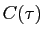
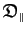
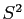

- AIC
- Akaike's Information Criteria
- AICc
- small sample size corrected AIC
- BIC
- Bayesian Information Criteria
- 
- correlation function

- chi-squared function
- CSA
- chemical shift anisotropy
-

- the set of diffusion tensor parameters
-

- the eigenvalue of the spheroid diffusion tensor corresponding to the unique axis of the tensor
-

- the eigenvalue of the spheroid diffusion tensor corresponding to the two axes perpendicular to the unique axis
-

- the anisotropic component of the Brownian rotational diffusion tensor
-

- the isotropic component of the Brownian rotational diffusion tensor
-

- the rhombic component of the Brownian rotational diffusion tensor
-

- the ratio of
to
-

- the eigenvalue of the Brownian rotational diffusion tensor in which the corresponding eigenvector defines the x-axis of the tensor
-

- the eigenvalue of the Brownian rotational diffusion tensor in which the corresponding eigenvector defines the y-axis of the tensor
-
- the eigenvalue of the Brownian rotational diffusion tensor in which the corresponding eigenvector defines the z-axis of the tensor
-

- elimination value

- spectral density function
- NOE
- nuclear Overhauser effect
- pdf
- probability distribution function

- bond length
-

- spin-lattice relaxation rate
-

- spin-spin relaxation rate

- chemical exchange relaxation rate
- 
,
 , and
, and 
- model-free generalised order parameters
 ,
,  , and
, and 
- model-free effective internal correlation times

- global rotational correlation time
Edward d'Auvergne
2011-02-18